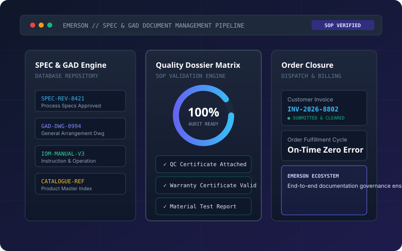
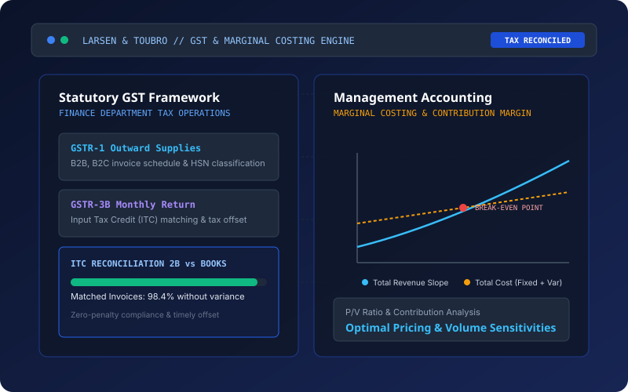
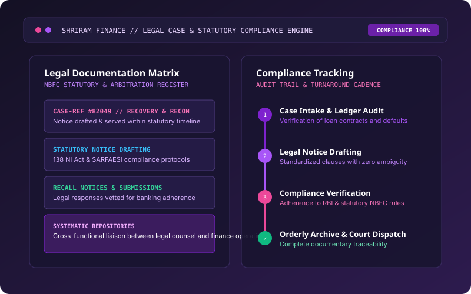

Driving operational precision at the intersection of finance, compliance, and business execution.
Commerce graduate pursuing an MBA in Finance with proven execution across statutory compliance, commercial invoice workflows, quality dossiers, and management accounting. Practiced in cross-functional governance at Emerson Process Management, Larsen & Toubro, Shriram Finance, and ELK India.
Open to Full-Time Finance & Business Operations Roles
Seeking entry into Accounts, Financial Reconciliation, GST/Tax Operations, and Order Administration. Equipped with practical exposure to Tally Prime, Excel modeling, and SOP governance.
Executive Accomplishments
Hands-on execution across global process automation orders, statutory GST reconciliations, and legal compliance administration.

Emerson: Quality Dossiers & Order Governance
Generated customer-ready invoices, warranty certifications, and QC files. Executed SPEC/GAD database governance and compiled Instruction & Operation Manuals adhering to rigorous engineering SOPs.

L&T: GST Statutory Reconciliation & Costing
Collaborated within L&T’s central GST division on GSTR-1, GSTR-3B filings and 2B Input Tax Credit reconciliation. Analyzed cost behaviors and break-even thresholds via marginal costing principles.

Shriram Finance: Legal Compliance & Case Registry
Maintained strict regulatory case files, drafted formal statutory notices and default recalls, and verified compliance with non-banking financial institution guidelines under tight statutory deadlines.
Active Focus Areas
Advancing core competencies across automated statutory filings, digital dossier governance, and interactive Power BI financial telemetry for executive reporting.
Operating Principles
Zero Tolerance for Discrepancy
Quality dossiers, warranties, and commercial invoices must align 100% with technical SPEC/GAD baselines to protect contractual compliance.
Reconciliation Integrity
Every rupee in 2B input credit must map directly to valid purchase vouchers, preventing audit delays and compliance penalties.
Clear Pricing & Empathy
Disciplined follow-up cadences and transparent quotation breakdowns foster trust and accelerate deal closure cycles.
Cross-Functional Bridge
Connecting finance, legal, sales, and quality departments with clear documentation speeds up organizational execution.